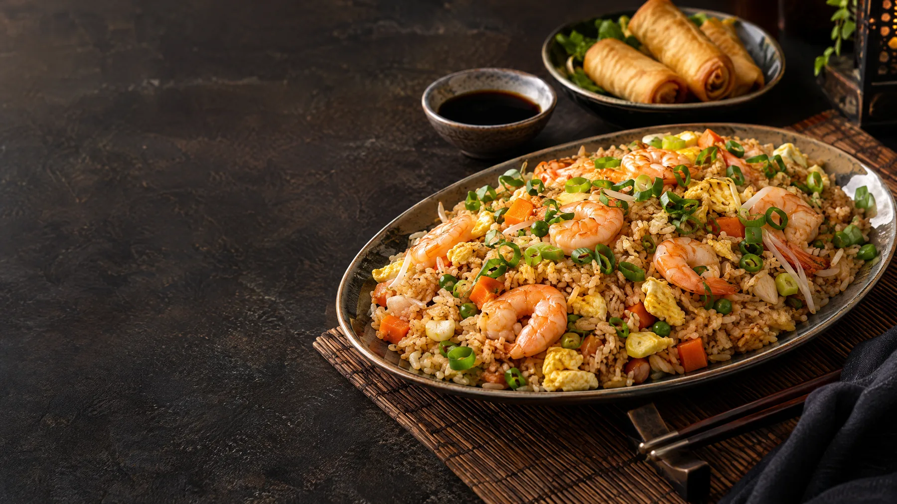

SANTA MARTA · MAGDALENA
Una buena mesa
siempre reúne.
Ven por tu favorito, pide para compartir o escríbenos para organizar tu próxima visita.
Cl. 29 #19-28
Comuna 4, Santa Marta
Comuna 4, Santa Marta

01EL RESTAURANTE
Tu antojo,
en buena compañía.
Gran Shanghai te espera en Santa Marta. Explora las opciones de la carta, consulta disponibilidad y planea tu visita directamente con el restaurante.
Hablemos de tu visita03 / TU PRÓXIMA VISITA
Guardemos
un lugar.
Cuéntanos cuándo quieres venir. Prepararemos un mensaje para WhatsApp; el restaurante te confirmará directamente si hay disponibilidad.
Reservas por WhatsApp
+57 304 533 4401
+57 304 533 4401
04 / CÓMO LLEGAR
Nos vemos
en Santa Marta.
Estamos en la Calle 29, en la Comuna 4. Abre el mapa para consultar la ruta y confirma nuestro horario por WhatsApp antes de visitarnos.
Cl. 29 #19-28Comuna 4, Santa Marta, Magdalena
COMUNA 4
CL. 29
Gran ShanghaiCl. 29 #19-28 · Santa Marta
Mapa esquemático; usa el enlace para abrir la ubicación precisa en Google Maps.
¿Se te antojó?Escríbenos y armamos el plan